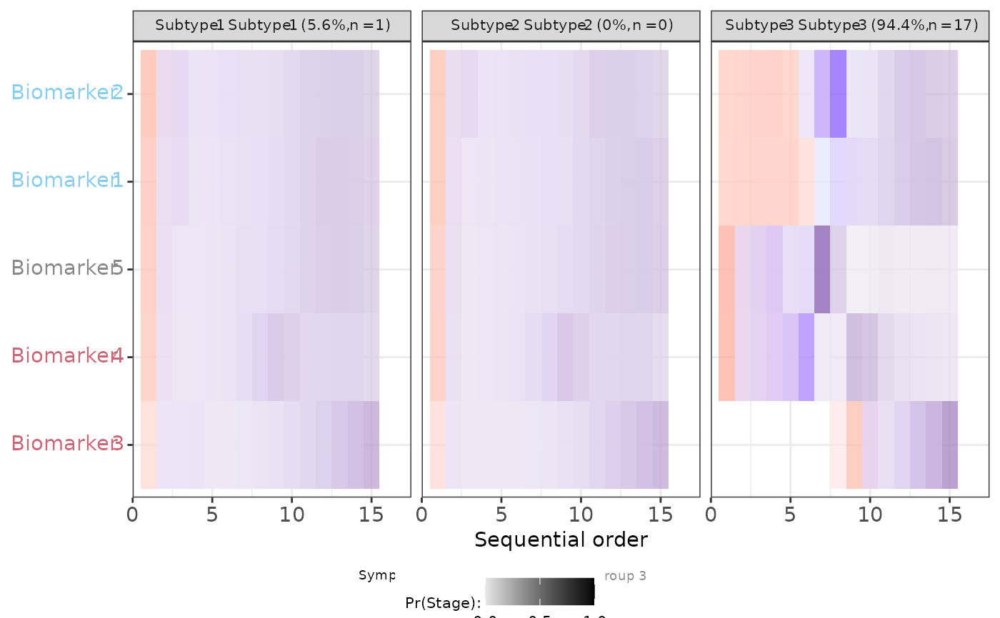

plot compact pvd figure
Usage
compact_pvd_figure(
plot_dataset,
tile_height,
y_text_size,
facet_names,
legend.position,
legend.direction = "vertical",
legend.box = "vertical",
legend.key.height = grid::unit(1, "lines"),
scale_colors,
rel_heights = c(1, 0.1),
guide_rel_widths = c(0.3, 0.7),
group_colors,
ncol_legend = 1,
group_color_legend = NULL,
legend_text_size = grid::unit(7, "pt"),
colorbar_label_type = "level",
strip_text_size = grid::unit(8, "points"),
x_text_size = y_text_size,
x_title_size = x_text_size,
...
)Arguments
- y_text_size
integer: size of y-axis text
- legend.position
the default position of legends ("none", "left", "right", "bottom", "top", "inside")
- legend.direction
layout of items in legends ("horizontal" or "vertical")
- legend.box
arrangement of multiple legends ("horizontal" or "vertical")
- legend.key.height
size of legend keys (unit); key background height & width inherit from legend.key.size or can be specified separately. In turn legend.key.size inherits from spacing.
- colorbar_label_type
what kind of label to use? Current options are
"level"and"subscript"- strip_text_size
passed to
ggtext::element_markdown()- x_text_size
integer: size of x-axis tick labels
- x_title_size
integer: size of x-axis title
- ...
additional element specifications not part of base ggplot2. In general, these should also be defined in the
element treeargument. Splicing a list is also supported.
Examples
size_y <- 11
figs <- extract_figs_from_pickle(
use_rdS = TRUE,
size.y = size_y,
n_s = 3,
rda_filename = "data.RData",
dataset_name = "sample_data",
output_folder = fs::path_package("extdata/sim_data", package = "fxtas")
)
#> Registered S3 methods overwritten by 'readr':
#> method from
#> as.data.frame.spec_tbl_df vroom
#> as_tibble.spec_tbl_df vroom
#> format.col_spec vroom
#> print.col_spec vroom
#> print.collector vroom
#> print.date_names vroom
#> print.locale vroom
#> str.col_spec vroom
y_text_size <- 11
tile_height <- 1
facet_label_prefix <- names(figs)
legend_position <- "none"
scale_colors <- c("red", "blue", "purple4")
plot_dataset <- fxtas:::compact_pvd_data_prep(figs = figs)
# facet labels
facet_names <- fxtas:::compact_pvd_facet_labels(
figs = figs,
facet_label_prefix = facet_label_prefix
)
nrow_colors <- 1
group_colors <- figs |> group_colors()
temp_plot <- plot_dataset |> pvd_scatter(
group_colors = group_colors,
nrow_colors = nrow_colors
)
group_color_legend <- temp_plot |> cowplot::get_legend()
# generate figure
compact_pvd_figure(
plot_dataset,
tile_height = tile_height,
y_text_size = y_text_size,
facet_names = facet_names,
legend.position = legend_position,
scale_colors = scale_colors,
group_colors = group_colors,
group_color_legend = group_color_legend
)
